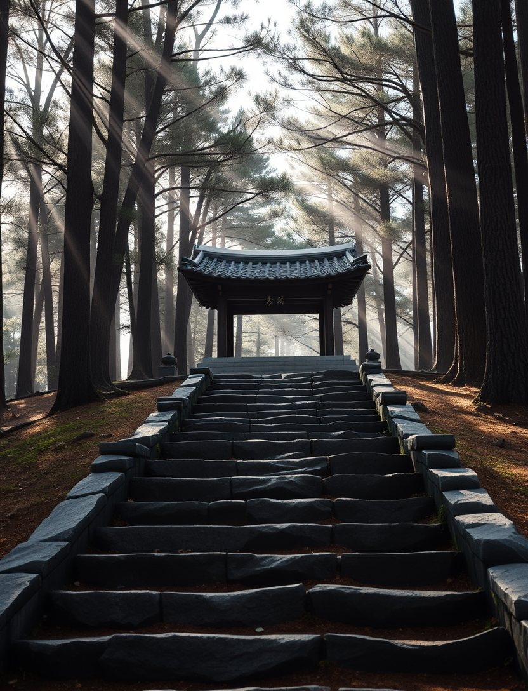
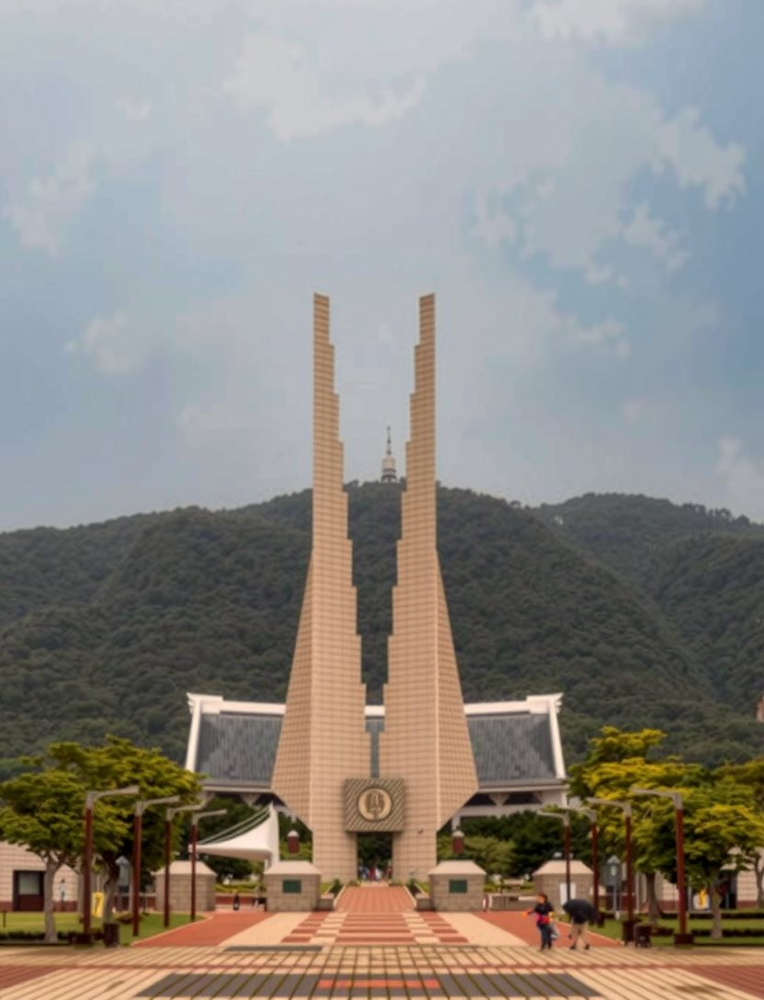
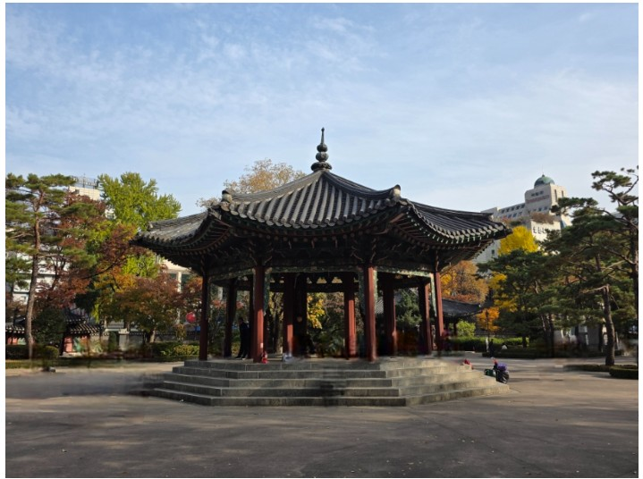
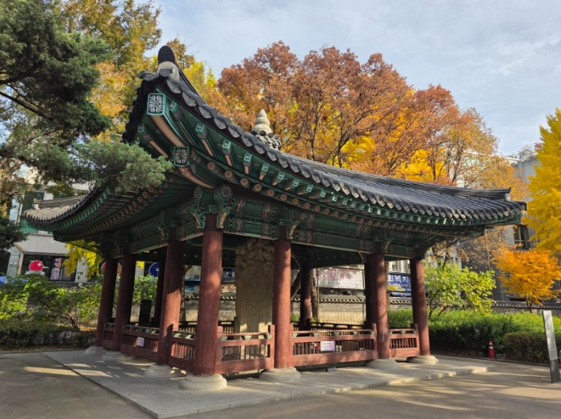

서부 본대 · 종주단
제주 조천 → 파주 임진각
제주에서 채화한 횃불을 들고 바다를 건너 호남·충청·경기를 지나 서울과 파주까지, 만세 거점을 차례로 잇습니다.
본대 구간 보기한 걸음 더, 그날의 함성 속으로.
제주 조천에서 파주 임진각까지 51일 동안 함께 걷습니다.
1919년 3월, 만세의 함성은 장터와 역 광장, 교회와 학교 앞에서 시작되었습니다. 108년 뒤 우리는 그 자리들을 걸어서 잇습니다. 지역마다 선포식을 열고, 그날의 이름을 다시 부르며, 다음 세대와 함께 걷습니다.
왜 걷는가
서부 본대가 전 구간을 걷고, 동부·중부는 지역본부가 하루씩 횃불을 이어 본대와 합류합니다. 주일에는 걷지 않고 머문 곳에서 예배합니다.
제주에서 채화한 횃불을 들고 바다를 건너 호남·충청·경기를 지나 서울과 파주까지, 만세 거점을 차례로 잇습니다.
본대 구간 보기영남과 강원, 경기 북부의 지역본부가 하루씩 걷고 횃불을 넘깁니다. 8월 11일 탑골공원에서 본대와 만납니다.
동부 릴레이 보기
중부 릴레이충북과 대전의 횃불이 독립기념관 겨레의 집에서 본대의 불과 처음 합쳐집니다. 세종은 본대가 조치원·전의를 직접 지납니다.
중부 릴레이 보기지도에서 점이나 길을 누르거나, 목록에서 고르세요. 하루 단위로 신청하고, 집결지·시간·준비물 안내는 문자로 갑니다.
만세운동이 일어난 전국 유적지를 걸어서 잇고, 지역마다 기념행사를 열어 그날의 함성을 되살립니다.
17개 시·도에서 채화한 횃불이 독립기념관과 탑골공원에서 합쳐지고, 광복절 임진각에서 ‘하나 된 불’로 타오릅니다.
청년 기자단과 학생 참가, 유공자 후손 초청, 1km 1만 원 후원으로 독립유공자 후손의 주거 개선 기금을 모읍니다.
세 번의 합화. 지역의 불이 모일 때마다 함께 걷는 사람도 늘어납니다.
우리는 이에 우리 조선이 독립한 나라임과 조선 사람이 자주적인 민족임을 선언한다.
吾等은 玆에 我朝鮮의 獨立國임과 朝鮮人의 自主民임을 宣言하노라.
기미독립선언서 · 1919년 3월 1일
참가 접수를 열고 종주단 공개 모집을 시작합니다. 17개 시·도 지역본부도 이날 함께 발족합니다.

소식 받기 — 출범과 접수 소식을 문자로 알려 드립니다.
본대가 걷는 거리만큼 후원합니다. 후원금은 독립유공자 후손 주거 개선과 지역 만세길 정비에 쓰이며, 사단법인 명의 기부금영수증을 발급합니다.
체력과 날씨, 준비물, 단체 참가까지. 더 궁금한 점은 사무국이 답해 드립니다.
구간을 고르고 연락처를 남겨 주세요. 집결지·시간·준비물은 문자로 안내합니다.
어떤 역할로 들어갈지 고르세요.
ccn24.com 회원 계정으로 로그인합니다.